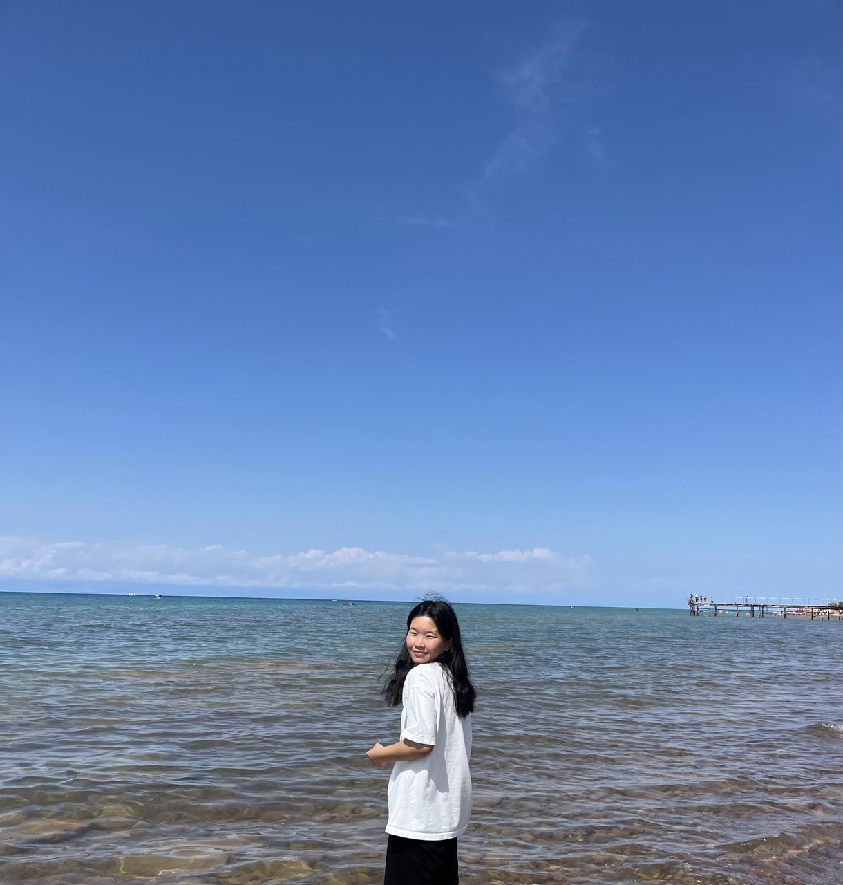

Student ID: 20242015
Passionate about behavioral science, literature, and nature.
🌊 Ocean lover • 🐶 Dog & cat enthusiast • 🍵 Matcha addict • 📸 Photography lover
I'm a Business Administration student passionate about understanding human behavior through the lens of behavioral science and literature. My journey combines academic curiosity with a love for the beauty found in nature, especially the ocean, and the companionship of both cats and dogs.
When I'm not diving deep into my studies, you can find me by the water, enjoying a cup of matcha, spending time with furry friends, or capturing beautiful moments through photography. I believe in finding balance between academic pursuits and the simple joys in life.
My interests span across interdisciplinary fields, connecting business principles with behavioral insights and literary understanding to better comprehend human experience and decision-making.
I am absolutely in love with literature and I've read several classics and fantasy books recently, including works by Dostoevsky, Walter Scott's "Ivanhoe," and Tolkien's "The Lord of the Rings." These diverse literary works offer fascinating insights into human nature, historical contexts, and imaginative storytelling that complement my interest in behavioral science.
Email: baltabaevaailira@gmail.com
LinkedIn: Ailira Baltabaeva
Mailing Address:
50 UNIST-gil Eonyang-eup, Ulju-gun
Ulsan, Republic of Korea
Feel free to reach out to discuss business, behavioral science, literature, or just chat about dogs, cats, and matcha!
Here are some moments that bring me joy - from peaceful ocean scenes to adorable furry friends, scenic nature walks, and my favorite matcha drinks! I love capturing these beautiful moments through photography.
Business Administration Major
Student ID: 20242015
Pursuing a comprehensive understanding of business principles while exploring the intersection of behavioral science and literature in business contexts.
Interdisciplinary Approach
Passionate about integrating behavioral science insights with business administration. Interested in how human behavior and literary understanding can inform better business decisions and organizational management.
Future Aspirations
Developing expertise in business administration while maintaining a holistic view that incorporates behavioral insights and literary perspectives to understand human motivations in business environments.